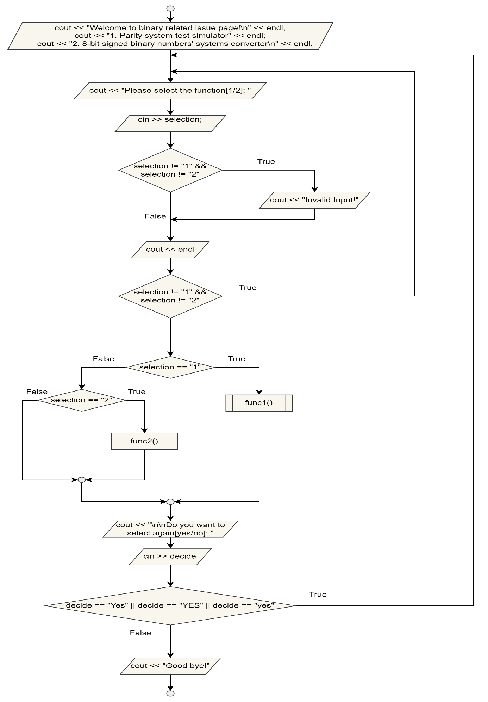
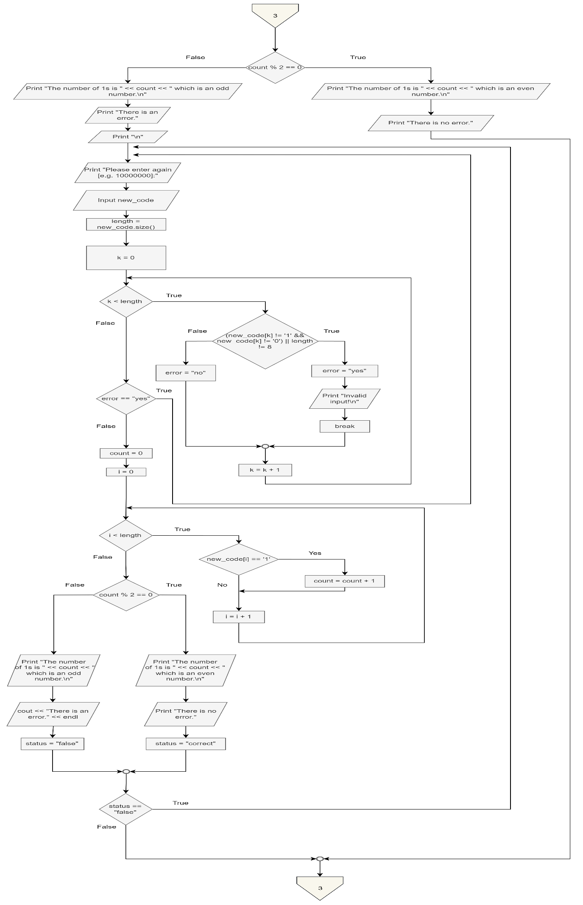
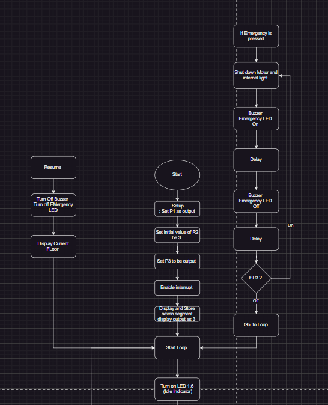
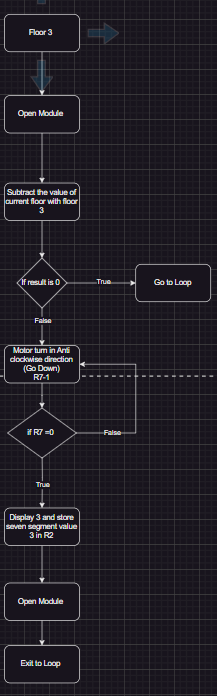
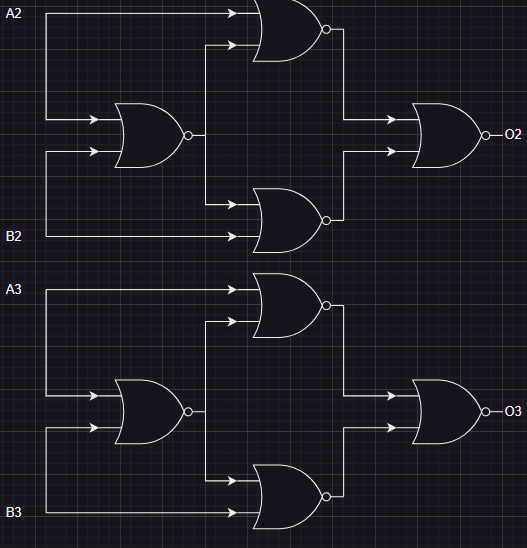
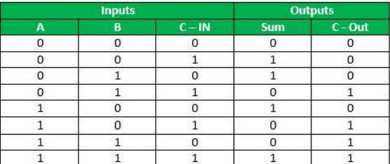
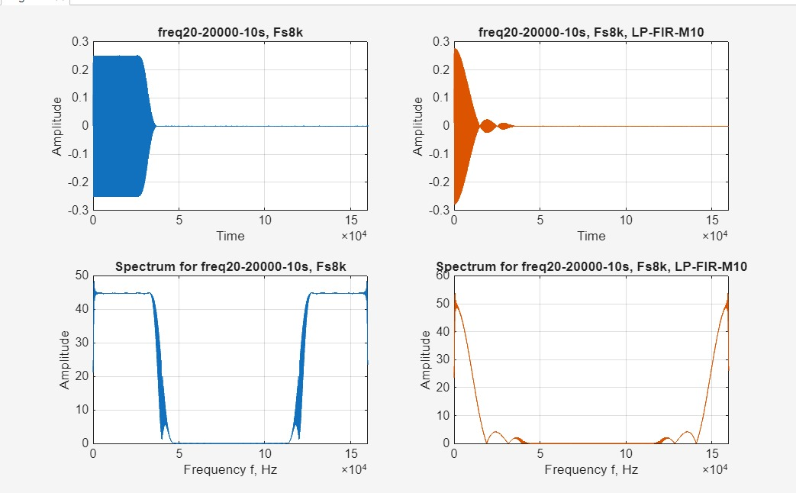
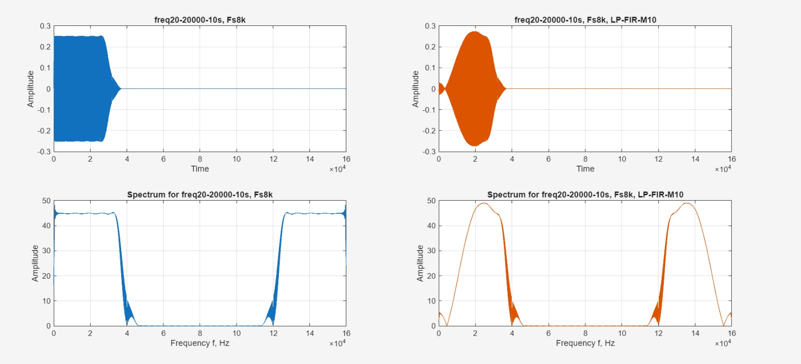

Digital electronic toolkit
Base and ASCII conversion, parity checks, truth tables, logic-device outputs and signed-binary representations.
Academic engineering
Click a year to move directly to its assignments, diagrams and supporting evidence. The visual record starts with program flow, then moves through embedded control, digital hardware and signal-processing results.
Study route
Year 1 · programming and logic
The programming assignment built a console toolkit for binary operations, parity checking and signed 8-bit conversion. The diagrams show the menu and parity-control paths that organise the implementation.


Base and ASCII conversion, parity checks, truth tables, logic-device outputs and signed-binary representations.
Boolean gates and digital-state relationships translated from truth-table rules into program logic.
Input validation, function selection and repeat-control paths captured in the submitted flow diagrams.
Year 2 · microcontrollers and control
The three-floor elevator project combines floor calls, direction control, display logic, emergency handling and door coordination. The main system arrangement and startup flow provide the visual evidence for the controller design.

Microcontroller assignment
An 8051 model with calls and indication, L293D motor direction, emergency interrupt, buzzer, reactivation, idle power saving and door-controller coordination.


State table, K-map, D-flip-flop module, clock divider and Quartus schematic work.
Microcontroller routines for call processing, motor direction, alarms and floor indication.
Hardware and software evidence used together to check each state transition.
Year 3 · ASIC and digital hardware
The ASIC work moves from Boolean construction into an 8-bit arithmetic design. The supporting images retain the actual gate arrangement and truth-table evidence used in the report.

ASIC assignment
Gate-level Verilog for an 8-bit ripple adder, a NOR-only XNOR block and overflow or carry indication with testbench evidence.

Op-amp summing, inverter and comparator stages implementing two switching thresholds near a setpoint.
Device-level behaviour and logic implementation explored through laboratory and design work.
Control concepts developed alongside practical circuit construction and response interpretation.
Year 4 · DSP, embedded systems and integration
The DSP laboratory records compare the original signal against FIR-filtered output in time and frequency views. These measured plots sit beside embedded-system work and the final EEG-BCI project.


FIR filter design and response analysis using time-domain and frequency-domain graphs.
Python dashboard for ESP32 serial readings, environmental values, inertial data, impact alerts and connection state.
P300 decoding, vision-guided target selection and robotic preparation. Open the detailed FYP page.